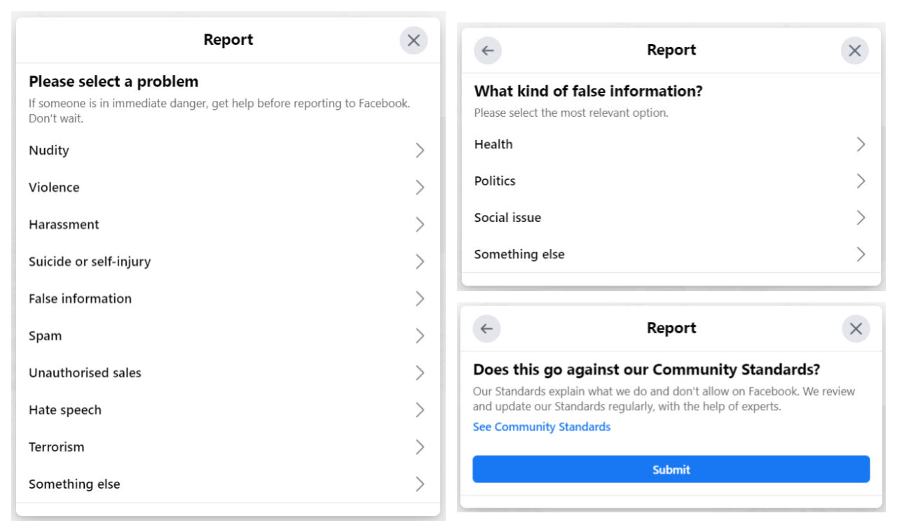
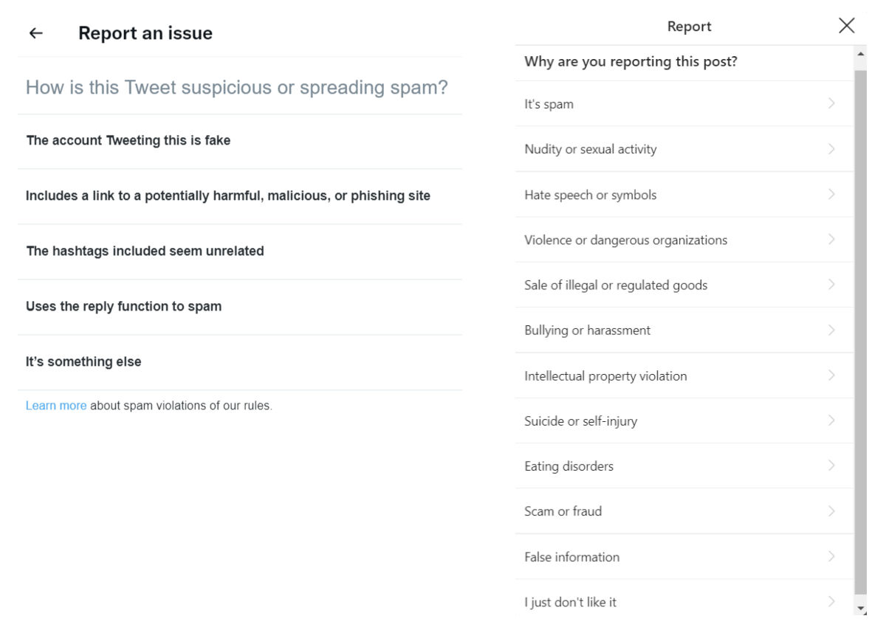

Trainees Edition
Trainers Edition
Trainees Edition
Trainers Edition
17. nodarbība: faktu pārbaudes platformas un to pakalpojumi
Nodarbības apraksts
Šīs nodarbības primārais mērķis ir iepazīstināt ar faktu pārbaudes platformām, to darbību un pakalpojumiem.
Nodarbības sekundārais mērķis sniegt vadlīnijas pasniedzējiem, kuri vēlas izmantot nodarbības saturu, lai apmācītu savus studentus.
Nodarbības laikā tiek sniegts priekšstats par faktu pārbaudes platformām un pakalpojumiem, kā arī tiek piedāvātas vadlīnijas, kā pasniegt konkrēto nodarbību.
Studenti, kuri veiksmīgi apgūs šīs nodarbības saturu, spēs:
- identificēt faktu pārbaudi un faktu pārbaudītāju
- izprast faktu pārbaudes platformas un to darbību
- izprast Starptautisko faktu pārbaudes tīklu (IFCN)
- saprast “Principu kodeksu” (Code of Principles)
- saprast automatizēto faktu pārbaudi
Pasniedzēji, kuri veiksmīgi apgūs šīs nodarbības saturu, spēs dalīties zināšanās un prasmēs par faktu pārbaudes platformām, to darbību un pakalpojumiem.
Nodarbības struktūra
Šīs nodarbības izklāsts sastāv no sekojošām apakšnodaļām:
- Mērķis, satura izklāsts un mācību rezultāti;
- Nodarbības struktūra;
- Vadlīnijas studentiem;
- Vadlīnijas pasniedzējiem; (kā sagatavoties; mācību metodes un padomi);
- Saturs (mācību materiāli un vingrinājumi);
- Tests;
- Informācijas avoti (izmantotie un ieteicamie informācijas avoti, un video).
Galvenie nodarbības mērķi, satura apraksts un studiju rezultāti ir izskaidroti nodarbības apraksta daļā. Vadlīnijas studentiem ietver norādījumus un ieteikumus mācību vielas apguvē. Vadlīnijas pasniedzējiem sniedz padomus dažādos apmācības posmos, kas būtu noderīgi mācību priekšmeta mācīšanai. Saturs ietver visus mācību materiālus un ar to saistītos vingrinājumus. Tests sastāv no jautājumiem ar vairākiem atbilžu variantiem, kas palīdzēs studentiem novērtēt savu progresu. Informācijas avoti iedalās: izmantotie informācijas avoti un ieteicamie informācijas avoti, kas paredzēti individuālai apguvei un turpmākai izpētei. Izmantotie informacijas avoti ir saraksts, kurā uzskaitīti materiāli nodarbības sagatavošanai. Ieteicamie informācijas avoti sastāv no papildu avotu un videoklipu saraksta, kurus ieteicams lasīt un skatīties, lai uzzinātu vairāk par konkrēto nodarbības tēmu.
Vadlīnijas studentiem
Studentiem jāizlasa teksts, jānoskatās ieteicamie video un jāizpilda vingrinājumi. Papildinformāciju studenti var meklēt ieteiktajos resursos. Pēc iepazīšanās ar nodarbības saturu studentiem ieteicams aizpildīt testu, lai novērtētu savu progresu. Ja nepieciešams, studenti vēlreiz var pārskatīt mācību materiālu.
Vadlīnijas pasniedzējiem
Ietver ieteikumus un padomus pasniedzējiem, kā izmantot šīs nodarbības saturu mācību procesā.
Sagatavošanās
Sagatavot prezentāciju (PowerPoint/Prezi/Canva) par nodarbības tematu, kas bagātināta ar vizuāliem uzskatāmiem piemēriem (atteli un video). Ieteicams katrai nodarbības mērķauditorijai pielāgot individualus piemērus un vingrinājumus. Vietējo piemēru izvēle (konkrētā valstī) saistībā ar pašreizējām vai labi zināmām problēmām palīdzēs skaidrāk ilustrēt jautājumu, kā arī pievērst studentu uzmanību. Jo pazīstamāki un populārāki būs piemēri, jo labāk tiks nodots vēstījums.
Darba/Nodarbības uzsākšana
Īss tests (3-5 jautajumi), vēlams izmanto Kahoot vai Mentimeter rīkus, lai panāktu lielāku studentu iesaisti. To var izmantot kā motivācijas rīku, kā arī, lai pārbaudītu apmācāmo esošās zināšanas par nodarbības tematu. Daži jautājumu piemēri varētu būt šādi: Kas ir faktu pārbaude? Vai zināt, kas ir Starptautiskais faktu pārbaudes tīkl?
Nodarbības vadīšanas metodes
Mācību procesā var tikt izmantotas dažādas metodes. Piemēram:
- Lekcija
- Diskusija
- Darbs grupās
- Pašrefleksija
Padomi pasniedzējiem
Iesildīšanās
Lai efektīvi iesaistītu studentus nodarbības procesā un vienotos, kas tiks apgūts tās laikā, nepieciešams uzdot dažus jautājumus par nodarbības tēmu. Ieteicams grupu darbs, aicinot studentus apspriest un apkopot idejas. Tāpat arī individuāls darbs, lūdzot katram dalībniekam uzrakstīt savas idejas uz līmlapiņām.
Idejas aktivitātes realizēšanai:
- vai viņi zina kādu no faktu pārbaudes platformām
- vai viņi iepriekš ir iesnieguši aizdomīgu saturu kādā faktu pārbaudes platformā
- vai viņi iepriekš ir lasījuši analīzi, ko sagatavojusi kāda no faktu pārbaudes platformām
- vai viņi ziņo par aizdomīgu saturu Facebook, Instagram vai Twitter.
Nodarbības mērķa izskaidrošana
Skaidri jānorāda nodarbības mērķis (tie ir rīki un metodes, ko var izmantot informācijas pārbaudei). Pēc iesildīšanās jautājumiem būs vieglāk izskaidrot nodarbības mērķus.
Skaidri jānorāda nodarbības mērķis (kas ir faktu pārbaudes platformas, to darbības un pakalpojumi). Pēc iesildīšanās jautājumiem būs vieglāk noskaidrot mērķus.
Nodarbības satura izklāsts
Iepazīstinot ar nodarbības saturu, pārliecinieties par mijiedarbību ar studentiem un mudiniet viņus aktīvi iesaistīties:
- Skaidrojot tēmu, jāiekļauj piemēri no ikdienas dzīves.
- Ja jūsu valstī ir faktu pārbaudes platforma, var parādīt tās analīzes piemērus. Tāpat nodarbības laikā var pārbaudīt, vai šo platformu metodoloģijas, finansējums, informācija par komandu iekļauta mājaslapā. Ja mājaslapas informācijā atrodamas nepilnības, tās var pārspriest diskusijas ceļā.
- Tāpat kursā var izmantot gan vietējos, gan starptautiskos piemērus. Tas palīdzēs praktikantiem asimilēt priekšmetu.
Noslēgums
Izveidojiet īsu nodarbības kopsavilkumu un uzdodiet dažus jautājumus, kas palīdzēs saprast svarīgāko, ko vēlējāties studentiem iemācīt.
Sekojošs jautājums var palīdzēt:
- Pajautājiet studentiem, kādi norādītie kritēriji “Principu kodeksā” jāievēro, lai kļūtu par Starptautisko faktu pārbaudes tīklu biedru?
Noslēdzot nodarbību, pārliecinieties, vai studenti sapratuši faktu pārbaudes plaformu darbības principus un papaklpojumus.
Saturs: faktu pārbaudes platformas un pakalpojumi
Ievads
Jēdzienu “patiesuma pārbaude” un “faktu pārbaude” definēšana un atšķirību noteikšana starp tiem tika izklāstīta 16. nodarbības aprakstā. Tomēr, pirms pārietpie faktu pārbaudes platformām un to pakalpojumiem, lietderīgi atgādināt, kāda ir faktu pārbaudes definīcija.
16. nodarbībā faktu pārbaude tika definēta kā process, kas tiek veikts pēc informācijas publicēšanas, salīdzinot atklātu apgalvojumu, kas izteikts publiski, ar uzticamiem un autentiskiem avotiem. Tas arī koncentrējas uz apgalvojuma loģiku, saskaņotību un kontekstu (Mantzarlis, 2015). Persona, kas veic faktu pārbaudi un nodarbojas ar šo darbu, tiek saukta arī par faktu pārbaudītāju. Turklāt ikviens, kam ir zināšanas un prasmes faktu pārbaudē, var kļūt par faktu pārbaudītāju. Faktu pārbaudītāju darbs ir brīvs no sadarbībām ar citiem, aizstāvības un retorikas. Turklāt viņi meklē pārbaudāmus faktus (Elizabeth, 2014).
Faktu pārbaudītāju un faktu pārbaudes platformu galvenais mērķis ir vairot zināšanas, pētot un informējot par nepatiesiem faktiem paziņojumos, ko izteikuši politiķi vai ikviens, kura vārdi un ziņas ietekmē citu cilvēku dzīvi. Turklāt faktu pārbaudes mērķis ir sniegt iedzīvotājiem faktisku, skaidru un rūpīgi pārbaudītu informāciju, kas ļautu viņiem izdarīt apzinātu izvēli, balsojot vai pieņemot citus svarīgus lēmumus (Elizabeth, 2014). Faktu pārbaudes pamatā ir atsauce uz autoritāti. Autoritāte šajā gadījumā ir avoti, nevis faktu pārbaudītāji. (Mantzarlis, Funke & Benkelman, 2019).
Faktu pārbaudes platformas
Tiek uzskatīts, ka faktu pārbaudes platformu pirmsākumi meklējami ASV, kurā atrodami pirmie verifikācijas piemēri, kas saistāmi ar 80. gadu un Ronalda Reigana prezidentūras laiku (Dobbs, 2012, p. 1; Lowrey, 2017, p. 377). Deviņdesmito gadu beigās, pieaugot interneta popularitātei, daudzi politiski orientēti emuāri, bieži vien ar ideoloģisku noslieci, sāka pārbaudīt politikas kandidātus un galvenos ziņu kanālus (Lowrey, 2017, p. 377). Arī patiesuma pārbaudes vietņu izcelsme meklējama Snopes un līdzīgās vietnēs, kas radās 90. gados un atklāja viltojumu. Šīs vietnes uzsākušas izskatīt politiskus apgalvojumus, kā arī daudzus citus jautājumus (Fader, 2012; Lowrey, 2017, p. 377).
Savukārt 2000.gados parādījās un strauji izplatījās platformas, ko var saukt par neatkarīgiem politisko faktu pārbaudītājiem. Pēdējo gadu politiskās vēlēšanas radījušas labvēlīgu augsni faktu pārbaudes platformu veidošanai un izaugsmei, kas uzskatāma par vienu no daudzajām jaunajām žurnālistikas formām un praksēm digitālajā laikmetā (Graves & Cherubini, n.d., p. 6; Lowrey, 2017, p. 376). Politikas veidotājii faktu pārbaudi uzskata par efektīvu līdzekli cīņā ar dezinformāciju tiešsaistē (Mantzarlis, Funke & Benkelman, 2019). Pirmās platformas, kas veltītas politisko apgalvojumu patiesuma novērtēšanai, parādījās ASV 2000. gadu sākumā (Graves & Cherubini, n.d., p. 6). Factcheck.org (2003), PolitiFact (2007) ir vienas no pirmajām organizācijām, kas sāka darboties kā no medijiem neatkarīgas verifikācijas platformas. Saskaņā ar jaunāko Duke Reporters' Lab aprēķinu (Stencel & Luther, 2021), līdz 2021. gada jūnijam kopumā konstatēti 341 aktīvi faktu pārbaudes projekti aptuveni 102 valstīs (Stencel & Luther, 2021).

Avots: Duke Reporters’ Lab
Laika gaitā veikti dažādi pētījumi par faktu pārbaudes ietekmi (Lim, 2018, p.1). Daži pētījumu rezultāti norāda, ka faktu pārbaude atturēs politiķus no nepatiesu vai maldinošu apgalvojumu popularizēšanas, kalpojot kā visaptverošs un konsekvents uzraudzības instruments (Nyhan ve Reifler, 2015, p. 2, 19-20). Savukārt citi pētījumu rezultāti apgalvo, ka faktu pārbaudei ir maza ietekme uz politiķu uzvedības maiņu, paužot, ka politiķi bieži ignorē faktu pārbaudītāju kritiku un pat uzskata tos par politiski neobjektīviem (Froomkin, 2012; Gottfried, Hardy, Winneg & Jamieson, 2013; Waldman, 2015).
Faktu pārbaudes platformu mērķis ir popularizēt patiesību publiskajā diskursā. Tomēr, kad runa ir par politiskās realitātes kontroli, tas izraisa diskusijas. Pat vienkārši faktu jautājumi var izraisīt domstarpības, tādējādi faktu pārbaudītāji bieži tiek pakļauti negatīvai kritikai no tiem, kas nepiekrīt viņu lēmumiem (Graves & Cherubini, n.d., p. 6). Tomēr daži pētnieki (Ostermeier, 2011; Uscinski & Butler, 2013, p. 162-163; Uscinski, 2015) norādījuši, ka faktu pārbaudes platformas gan daudzpusējas, gan arī, ka tām piemīt vairāki trūkumi (īpaši metodoloģiski).
Lai stiprinātu uzticēšanos faktu pārbaudes platformām un to darbībai, tām ieteicams palielināt savu pakalpojumu procesu un finansējuma avotu caurskatāmību (Brandtzaeg & Følstad, 2017, p. 65). Faktu pārbaudes platformu un to pakalpojumu kritikas rezultātā ik pa laikam rodas jautājums: “Kas pārbauda pašus faktu pārbaudītājus?”. Indivīdi tiek uzskatīti par vissvarīgāko auditoriju, kas apstiprina faktu pārbaudītājus.
Indivīdi var pārbaudīt, vai faktu pārbaudes platformas dalās ar savām izmantotajām metodoloģijām un finanšu resursiem. Tajā pašā laikā katrs indivīds var kontrolēt verifikācijas soļus, apgūstot verifikācijas zināšanas un prasmes. Vēl viena svarīga organizācija, kas nodrošina, ka faktu pārbaudes platformas tiek novērtētas pēc caurskatāmības, objektivitātes un darbojas saskaņā ar noteiktiem standartiem, - Starptautiskais faktu pārbaudes tīkls (International Fact-Checking Network (IFCN)) (International Fact-Checking Network, 2020).
Starptautiskais faktu pārbaudes tīkls
2015. gadā Starptautisko faktu pārbaudes tīklu izveidoja Poynter, iestāde, kas nodrošina žurnālistikas izglītību un dažādas pētniecības aktivitātes. Šī tīkla mērķis ir apvienot aizvien pieaugošās faktu pārbaudītāju kopienas visā pasaulē. Tīkla komanda uzrauga tendences faktu pārbaudes jomā, nodrošinot to pārbaudītājus ar jaunākajiem resursiem, sniedzot ieguldījumu publiskajā diskursā un atbalsta jaunas iniciatīvas un projektus, kas uzlabo atbildību žurnālistikā (International Fact-Checking Network, 2021).
Tīkls izveidojis un publicējis “Principu kodeksu”, par tā pamatu ņemot idejas, ar kurām dalījušies faktu pārbaudītāji no dažādām pasaules valstīm. Šie principi adresēti organizācijām, kas regulāri publicē objektīvus ziņojumus par publisku personu un vadošo organizāciju apgalvojumu precizitāti, kā arī citus plaši izplatītus apgalvojumu spar sabiedrības interesēm (“IFCN Code of Principles”, 2021a).
Kritēriji, kas nepieciešami, lai faktu pārbaudes platforma kļūtu par tīkla dalibnieku, ir šādi (“IFCN Code of Principles”, 2021a):
- Apņemšanās ievērot bezpartejisku attieksmi un godīgumu: dalīborganizācijas izmanto vienādus standartus katrai faktu pārbaudei Faktu pārbaudītāji koncentrējas uz pierādījumiem, lai noteiktu rezultātus. Viņi neatbalsta un neieņem politisku nostāju jautājumos, kurus viņi pārbauda.
- Apņemšanās ievērot standartus un avotu caurspīdīgumu: dalīborganizācijas vēlas, lai to lasītāji arī paši varētu pārbaudīt rezultātus. Tās nodrošina visus avotus detalizēti, izņemot gadījumus, kad var tikt apdraudēta avota personiskā drošība.
- Apņemšanās nodrošināt finansējuma un organizācijas pārredzamību: Dalīborganizācijas nodrošina pāredzamus savus finansējuma avotus. Pieņemot finansējumu no citām organizācijām, tās nodrošina, ka finansētāji nevar ietekmēt faktu pārbaudītāju ziņojumos izdarītos secinājumus. Dalīborganizācijas arī sīki izklāsta katras organizācijas galveno personu profesionālo pieredzi, skaidri norāda organizatorisko struktūru un juridisko statusu, kā arī sniedz kontaktinformāciju.
- Apņemšanās ievērot standartus un metodoloģijas caurspīdīgumu: dalīborganizācijas apraksta izmantoto metodoloģiju. Tās arī mudina savus lasītājus iesniegt apgalvojumus, kuriem nepieciešama faktu pārbaude. Tāpat skaidri norāda, kāpēc un kā viņi veic faktu pārbaudi.
- Apņemšanās ievērot atklātu un godīgu korekciju politiku: dalīborganizācijas publicē korekciju politiku un rūpīgi to ievēro. Korekcija tiek veikta atklāti un pārskatāmi. Tajā pašā laikā viņi cenšas īstenot, lai lasītāji redzētu arī laboto versiju.
Faktu pārbaudes platformās var būt atšķirības, kas atspoguļo kultūras vai nacionālās atšķirības. Dažas no platformām var būt saistītas ar laikrakstiem, kamēr citas ar universitātēm vai nevalstiskām organizācijām. Taču finanšu jautājums daudzām no tām ir liela problēma. Tomēr ir cerība, ka “Principu kodeksa” (“Code of Principles”) ievērošana palīdz nodrošināt kvalitāti, konsekvenci un caurskatāmību, kā arī atbildību, kas paredzēta kvalitatīvas žurnālistikas veicināšanai (Kessler, 2016).
Sadarbība faktu pārbaudē
Faktu pāraude ir arī daļa no ziņu redakcijas darba procesa. Sagatavojot jebkuru ziņu publicēšanai, posms, kurā tiek veikti pēdējie labojumi, parasti ir redakcijas kontrole. Tā paredzēta, lai nodrošinātu ziņās izskanējušo apgalvojumu pārbaudi, visu nepilnību un kļūdu labošanu. Pretējā gadījumā nepamanītas kļūdas var ietekmēm gan žurnālista, gan organizācijas, ar kuru viņš saistīts, uzticamību (Blatchford, 2021).
Ņemot vērā politiķu pieaugošo tendenci izmantot nepatiesu un sagrozītu informāciju savās runās, daudzas ziņu organizācijas, piemēram, The Washington Post, Reuters, AP News, BBC, CNN iekļāvušas faktu pārbaudes struktūrvienu vienību savās institucionālajās struktūrās (Ceci & Williams, 2020). Ievērojams skaits šo struktūrvienību dalās ar lasītājiem faktu pārbaudes analīzēs savās organizāciju tīmekļa vietnēs.
Sadarbību ar faktu pārbaudes platformām sākušas arī dažas sociālo mediju platformas, piemēram, Facebook, Instagram, Twitter, TikTok un Google. Google ietver divus pamata faktu pārbaudes rīkus - Fact Check Explorer un Fact Check Markup Tool. Abu rīku mērķis ir atvieglot faktu pārbaudītāju, žurnālistu un pētnieku darbu (Google fact check tools, n.d.).
Fact Check Explorer: šis rīks palīdz jums meklēt, vai un kurās faktu pāraudīšanas platformās interesējošais jautājums pārbaudīts iepriekš. Ja tas pārbaudīts arī senāk, tad pastāv iespēja piekļūt tā analīzei. Faktu pārbaudes analīze šajā pāraudes rīkā tiks atspoguļota, ja tā atbilst vadlīnijām par rādīšanu Google meklēšanā vai YouTube (Google fact check tools, n.d.).
Piemēram, paskatīsimies, vai ir pieejam analīze šim apgalvojumam: “Bills Geitss bija atbildīgs par Sars-CoV-2 izveidi”.


Rezultāti norāda, ka šis apgalvojums ir nepaties un tā analīze veikta, kā arī apskatāma plašāk divas platformas - Rappler un Full Fact.
Fact Check Markup Tool: faktu pārbaudes platformā iespējams iekļaut arī ClaimReview strukturētos datus, kas nodrošina, ka jūsu faktu pārbaudes apkopotā versija tiek parādīta arī Google meklēšanas rezultātos (Google fact check tools, n.d.).
Piemēram, paskatīsimies, vai augstāk minētais Bila Geitsa apgalvojums parādās arī Google meklētājā.

Avots: Google Search results for “Bill Gates was responsible for creating Sars-CoV-2”
Redzams, ka Rappler publicētā faktu pārbaude par apgalvojuma nepatiesību ir iekļauta Google meklēšanas rezultātos.
Facebook sācis strādāt ar neatkarīgiem trešo pušu faktu pārbaudītājiem (piemēram, Full Fact, PolitiFact, Teyit). Kopš 2016. gada tiek turpināta paplašināta faktu pārbaudes programma, iekļaujot vairāk nekā 80 faktu pārbaudes struktūras, kas strādā vairāk nekā 60 valodās visā pasaulē. Programma ir vērsta uz dezinformācijas (jo īpaši pierādāmu nepatiesu apgalvojumu, kas var maldināt vai nodarīt kaitējumu) risināšanu (Facebook Journalism Project, 2021).
Ja faktu pārbaudes platformas konstatē nepatiesu, izmainītu, daļēji nepatiesu vai iztrūkstošu kontekstu, sociālajos tīklos Facebook un Instagram tiek lietotas dažas ar šo saturu saistītās atmaskošanas darbības (Facebook Journalism Project, 2021):
- Izplatīšanas samazināšana: Facebook šis saturs ziņu plūsmā tiek rādīts zemāk, un tā izplatīšana tiek samazināta. Vietnē Instagram šis saturs tiek noņemts no tēmturiem.
- Brīdinājums par kopīgošanu: kad lietotāji mēģina kopīgot šo saturu, lietotājam ar uznirstošā paziņojuma (pop-up) starpniecību tiek paziņots par šī satura statusu.
- Kopīgošanas paziņojumi: lietotāji, kuri iepriekš kopīgojuši saturu, arī tiek informēti par satura jauno statusu.
- Dezinformācijas etiķetes: saturam, ko faktu pārbaudes platformas atmaskojušas, tiek lietots skaidrs un vizuāls apzīmējums, pievienojot saites uz faktu pārbaudes platformas analīzi.
Ikvienam Facebook lietotājam ir iespējams ziņot par saturu, kas uzskatāms par aizdomīgu vai nepatiesas informācijas saturošu.

Avots: A Facebook post

Avots: Reporting the Facebook post
Līdzīga sūdzību struktūra tiek izmantota arī Instagram. Trešo pušu faktu pārbaudes platformas, kas strādā sadarbībā ar sociālo mediju platformu, pārskata saturu un pārbauda ziņas ar aizdomīgu saturu. Kad tiek konstatēts, ka ierakstā ir nepatiesa informācija, šim ierakstam tiek pievienots paziņojums, kas norāda, ka tajā ir nepatiesa informācija, lai lietotāji par to būtu informēti.

Avots: An Instagram post that includes missing content

Arī Twitter paziņojis, ka izveidojis lietojumprogrammu ar nosaukumu Birdwatch, kas palīdzēs cīņā ar maldinošu informāciju. Izmantojot šo lietotni, lietotājiem būs iespēja rakstīt piezīmes par tvītiem, kas, viņuprāt, satur maldinošu informāciju. Pagaidām tikai cilvēki ASV var redzēt Birdwatch vietnes saturu un pievienotās piezīmes par nepareizu informāciju (Twitter help center, n.d.). Lietotāji var ziņot arī par aizdomīgu saturu ne tikai Twitter, bet arī Facebook un Instagram.

Avots: Reporting a Twitter post

Avots: Reporting a Twitter post
Ņemot vērā dezinformācijas straujo izplatību, kas palilinājās līdz ar notikumiem, kas saistīti ar COVID-19 pandēmiju, TikTok platforma arī paziņojusi, ka nolēmusi sadarboties ar trešo pušu faktu pārbaudes platformām cīņā pret dezinformāciju (TikTok, 2021).
Automatizēta faktu pārbaude
Ņemot vērā dezinformācijas izplatīšanās ātrumu digitālajā vidē, svarīgi, lai faktu pārbaudītājiem būtu rīki, kas palīdz analizēt datu straumes un ātri reaģēt uz maldinošiem apgalvojumiem, tiklīdz tie parādās. Lai gan automatizācija vēl nevar pilnībā aptvert procesu no sākuma līdz beigām, tā var palīdzēt faktu pārbaudītājiem dažādos faktu pārbaudes procesa posmos (Sittmann & Tompkins, 2020).
Piemēram, identificējot maldinošus apgalvojumus tiešraidē par politiskiem notikumiem, faktu pārbaudītāji var izmantot programmatūru, lai audio informāciju pārvērstu teksta formātā, ko mašīnas var vieglāk apstrādāt (kā to dara Duke Reporters’ Lab izstrādātā Squash sistēma) vai saņemt televīzijas subtitrus (kā to dara Full Fact’s Live sistēma). Pēc tam tiek izmantotas dabiskās valodas apstrādes metodes un programmatūra, kas atzīmē teikumus (piemēram, ClaimBuster), lai izceltu apgalvojumus un atspējotu tos (Adair, 2021; Sittmann & Tompkins, 2020).
Papildus tiem var izmantot programmatūru, piemēram, ClaimReview, lai filtrētu iepriekš izskatītos apgalvojumus, salīdzinot rezultātus ar dažādām pētījumu datu bāzēm. Automatizācija var arī palīdzēt izplatīt faktu pārbaudes analīzi. Piemēram, Chequeabot var sagatavot sociālo mediju ziņas Argentīnas faktu pārbaudes platformas Chequeado redaktoram, lai viņš tās pārskatītu un pēc tam publicētu (Adair, 2021; Sittmann & Tompkins, 2020).
Kā minēts 16. nodaļā, automatizācija nenodrošina 100 % panākumus, pārbaudot lietotāju veidotu saturu. Tāpēc tradicionālo žurnālistikas paņēmienu un automatizācijas kombinācija ir ideāla faktu pārbaudes procesā (Wardle, n.d., p. 27).
Tests
Izmantotie informācijas avoti
Adair, B. (2021, June 28). The lessons of Squash, our groundbreaking automated fact-checking platform. Duke Reporters’ Lab.
Blatchford, T. (2021, October 13). ‘The fact-checking process can help you sleep better at night’: Tips from PolitiFact on bulletproofing your stories. Poynter.
Brandtzaeg, P. B. & Følstad, A. (2017). Trust and distrust in online fact-checking services. Communications of the ACM, 60(9), 65-71. doi: https://doi.org/10.1145/3122803
Ceci, S. J. & Williams, W. M. (2020, October 25). The psychology of fact-checking. Scientific American.
Dobbs, M. (2012, February). The Rise of political fact-checking: How Reagan inspired a journalistic movement: A reporter’s eye view. New America Foundation.
Elizabeth, J. (2014, May 20). Who are you calling a fact checker? American Press Institute.
Facebook Journalism Project. (2021). How Facebook’s third-party fact-checking program works.
Fader, C. (2012, September 28). Fact check: So who’s checking the fact-finders? We are. Jacksonville.com
Froomkin, D. (2013, February 6). How the mainstream press bungled the single biggest story of the 2012 campaign. Huffington Post.
Full Fact. (n.d.). About us: Automated fact checking.
Google fact check tools. (n.d.). About.
Gottfried, J. A., Hardy, B. W., Winneg, K. M. & Jamieson, K. H. (2013). Did fact checking matter in the 2012 Presidential campaign? American Behavioral Scientist, 57(11), 1558-1567.
Graves, L. & Cherubini, F. (n.d.). The rise of fact-checking sites in Europe. Reuters Institute for the Study of Journalism.
IFCN Code of Principles. (2021a). The commitments of the code of principles.
IFCN Code of Principles. (2021b). Verified signatories of the IFCN code of principles.
International Fact-Checking Network. (2021). Poynter.
International Fact-Checking Network. (2020, March 4). Code of principles [Video].
Kessler, (2016, September, 15). Fact-checking organizations around the globe embrace code of principles. The Washington Post.
Lim, C. (2018). Checking how fact-checkers check. Research and Politics, July-September, 1-7. doi: 10.1177/2053168018786848
Lowrey, W. (2017). The emergence and development of news fact-checking sites. Journalism Studies, 18(3), 376-394.
Mantzarlis, A. (2015, October 21). Will verification kill fact-checking?. In Poynter.
Mantzarlis, A., Funke, D. & Benkelman, S. (2019, February 14). How fact-checking has changed since 2015. Poynter.
Nyhan, B. & Reifler, J. (2014). The effect of factchecking on elites: A field experiment on U.S. state legislators. American Journal of Political Science, 59(3), 628-640.
Ostermeier, E. (2011, February 10). Selection bias? PolitiFact rates republican statements as false at 3 times the rate of democrats. Smart Politics.
Sittmann, J. & Tompkins, A. (2020, July 17). The strengths and weaknesses of automated fact-checking tools. DW Akedemie.
Stencel, M. & Luther, J. (2021, June 2). Fact-checking census shows slower growth. Duke Researchers’ Lab.
Stencel, M. & Luther, J. (2020, June 22). Annual census finds nearly 300 fact-checking projects around the world.Duke Researchers’ Lab.
Tiktok. (2021). COVID-19.
Twitter help center. (n.d.). About.
Uscinski, J. E. (2015). The epistemology of fact checking (is still naìve): Rejoinder to Amazeen. Critical Review, 27(2), 243-252.
Uscinski, J. E. & Butler, R. W. (2013). The epistemology of fact checking. Critical Review, 25(2), 162-180. doi: 10.1080/08913811.2013.843872
Waldman, P. (2015, December 1). Why Donald Trump is impervious to fact-checking. The Week.
Wardle, C. (n.d.). Verifying user-generated content. In C. Silverman (Ed.), Verification handbook: An ultimate guideline on digital age sourcing for emergency coverage (p. 25-32).
Ieteicamie informācijas avoti
Africa Check, Chequeado & Full Fact. (2019, June 20). Fact checking doesn’t work (the way you think it does). Full Fact Blog.
Bell, E. (2019, Fall). The fact-check industry. Columbia Journalism Review.
Hepworth, S. (2017, March 8). The New Yorker’s chief fact-checker on how to get things right in the era of ‘post-truth’. Columbia Journalism Review.
Jackson, J. (2017, January 12). BBC sets up team to debunk fake news. The Guardian.
Kelly, J. (2021, February 18). How ‘fact-checking’ can be used as censorship. Financial Times.
Tamkin, E. (2019, September, 11). CNN public editor: Daniel Dale’s fact-checking mission checks out. Columbia Journalism Review.